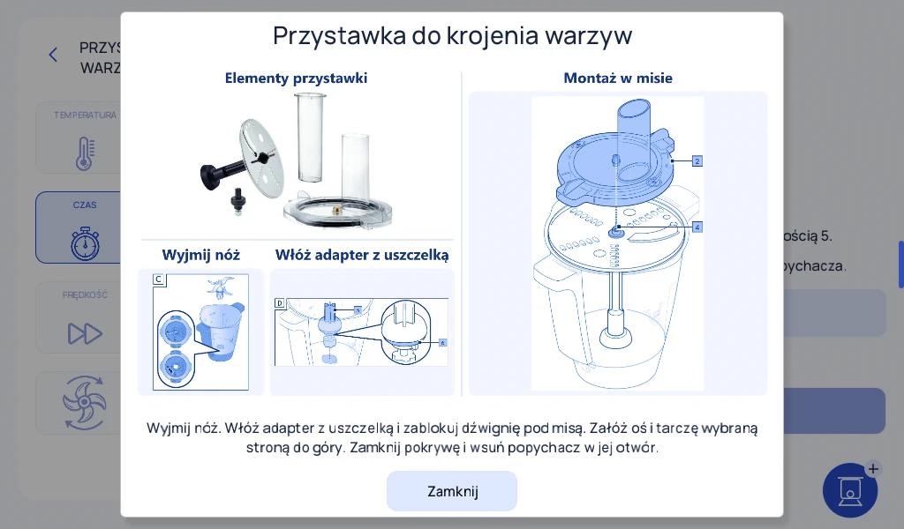
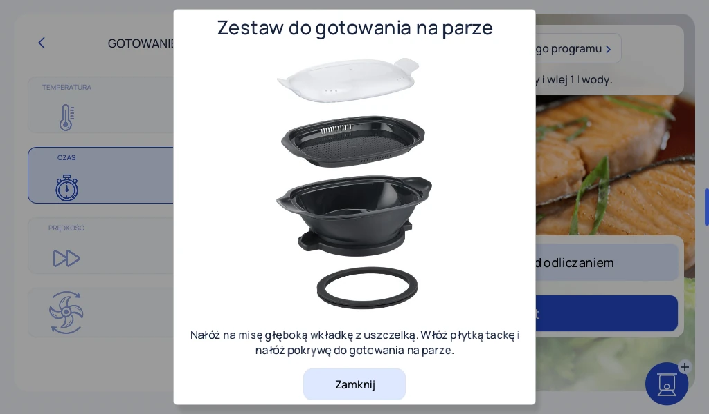
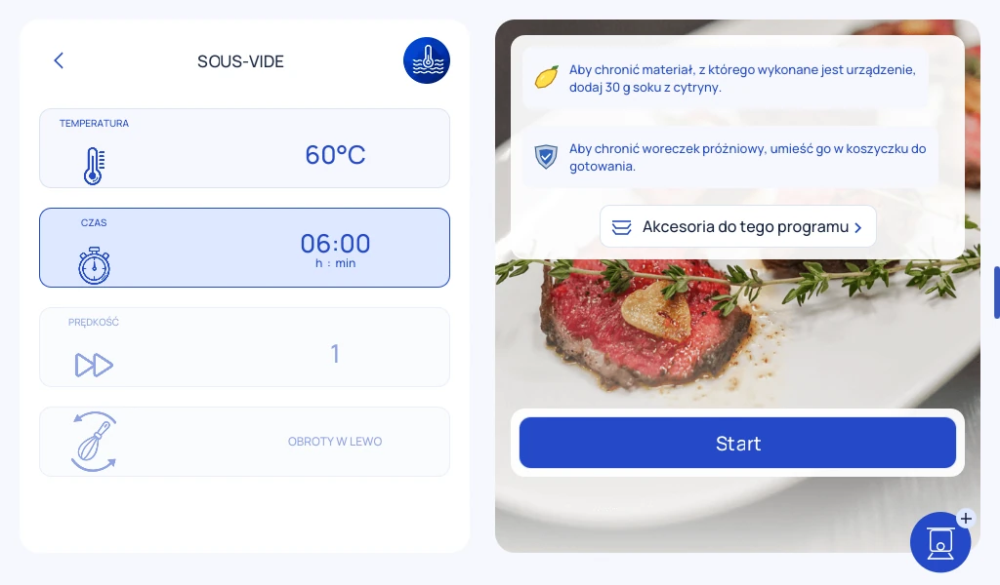
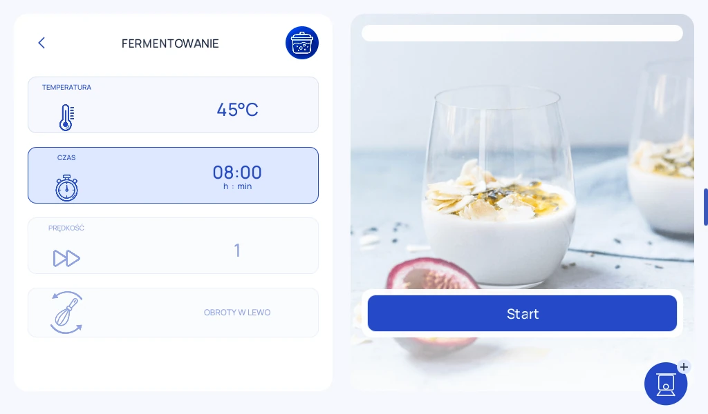

Monsieur Cuisine Connect ·
De la version 0.17.8 à la version 0.19.1
Les versions suivantes ont apporté le pelage de pommes de terre avec pesée, des instructions pour le montage des accessoires et des mises à jour de la base de données des recettes sur Internet. Ci-dessous sont les gouttes de Connect, les derniers accessoires graphiques et une liste de changements dans les versions individuelles.
Pèlerinage de pommes de terre et bouts d'outils dans les programmes
Dans le programme d’épluchage, la balance attend que vous confirmiez que tout est prêt. Vous avez ainsi le temps de placer le WunderPeeler sur le couteau par le haut. Après avoir fait la tare du bol, confirmez le poids des pommes de terre puis la quantité d’eau ajoutée. La mesure validée reste affichée pendant que vous fermez le bol. Le guide actuel comporte neuf vignettes et se termine par l’ajout d’eau.

Le bouton Accessoires de ce programme ouvre les instructions pour le programme sélectionné. L'adaptateur de coupe a une vue sur les éléments et un schéma d'assemblage bleu dans le bol. Le temps de coupe par défaut est d'une minute. Lors de la cuisson des œufs, vous pouvez voir des paniers et en option cartouche en silicone noir. La flèche jaune montre où mettre le moule, et l'illustration rappelle de l'huiler avant d'insérer les œufs.



La vapeur montre un autre élément de la vapeur. Cuisiner du riz et des paniers d'exposition Sous-video. Dans Sous-video, le bouclier signifie une recommandation pour fixer le sac à vide dans le panier, et le citron jaune distingue l'aspect d'ajouter 30 g de jus de citron.







Signal de poids, chauffage et lavage
Les réglages sonores étaient accompagnés du volume d'ouverture et de fermeture du couvercle et du volume séparé du signal pour atteindre la masse désirée. La prochaine modification renforce le fichier de signal de poids lui-même. Dans le chauffage à l'eau, le contrôleur Connect utilise un réglage de chauffage équivalent à 120°C pour atteindre la cible de 100°C plus rapidement. La lecture de la température reste visible à la fin du programme.
En nettoyage court et long, les rotations se développent progressivement à la vitesse prescrite, d'un niveau toutes les demi-secondes. Avant de changer de direction, la lame doit freiner pendant au moins trois secondes. Le message d'image papillon apparaît dans le programme de lavage, dans Smoothie, dans Mixing sur la purée et à des vitesses de 5-10 dans les réglages propres.


Annuaire et mises à jour sur Internet
Dans la page du catalogue, toutes les recettes MC utilisent la source de l'usine. Le Pro personnalisé dispose d'un répertoire séparé auquel des mises à jour des recettes et des photos sont envoyées. Vous pouvez passer d'une base de données téléchargée à un répertoire intégré. Afficher mes noms ont des filtres -All, -Backgrounds et -Created.


Le menu Mise à jour sépare la base de règles de l'application robot. Lors du téléchargement, il affiche le pourcentage, et lors de la vérification et du déballage, il affiche le nom de l'étape. Le bouton « Vérifier les mises à jour » est aligné avec les autres champs. Sur Connect, j'ai vérifié pour télécharger une révision stable de la base de données et pour aller au message "Catalogue" vérifié. L'installation du règlement est confirmée par l'utilisateur. Au cours de ce test, une mise à jour de la base de données était disponible dans un canal stable.

Paramètres, Firefox et pièces de rechange
Les paramètres ont de plus grandes icônes de style carrelage sur l'écran du programme. Les icônes Wi-Fi, les comptes, les mises à jour et les menus de la barre supérieure sont plus petits. Sur la gauche, le bouton continue de changer de programme et de projet. La flèche arrière supplémentaire a été retirée.
Le bouton de connexion au compte de Monsieur Cuisine lance le formulaire de connexion Lidl directement dans Firefox. Sur le même écran, le bouton « Ouvrir la boutique avec des pièces de rechange » mène à la catégorie Connect dans la boutique Monsieur Cuisine. Sur l'appareil, j'ai vérifié l'ouverture des deux côtés.

Liste des changements à partir de 0.17.8
- 0.17.8 — volume de robinet par défaut de 10%. Entrée précédente et baisse.
- 0.17.9 — le premier programme d'épluchage de pommes de terre avec l'écran de pesée, de guidage et de support WunderPeeler.
- 0.18.0 — ordre des en-têtes et des champs dans les programmes d'épluchage et de coupe de légumes.
- 0.18.1 — Version d'essai du pelage avec changement automatique de direction pendant le cycle.
- 0.18.2 — modification de la première phase du cycle d'essai.
- 0.18.3 — première compilation avec des sons de couvercle supplémentaires et réalisation de masse.
- 0.18.4 — curseurs de volume séparés pour ouvrir le couvercle, fermer le couvercle et prendre du poids.
- 0.18.5 – ajustez les sons et vérifiez si les paramètres de volume sont enregistrés après la mise à jour.
- 0.18.6 — la première version du robot avec un écran de mise à jour Internet et un support de canal bêta.
- 0.18.7 — essayer de télécharger et d'ouvrir une mise à jour de test du répertoire photo.
- 0.18.8 — Tentatives d'augmenter la base de données et de transmettre une mise à jour vérifiée à l'installateur Android.
- 0.18.9 — séparation des deux sources de recettes, Toutes les recettes MC et Adaptées pour Pro.
- 0.19.0 — une vue séparée de Mes noms et ses filtres dans Customized Pro.
- 0.19.1 — la transition du client de mise à niveau vers un canal stable et une tentative d'un paquet de base réel sur Connect.
- Compilation ultérieure 0.19.1 — confirmation de la pesée dans l'épluchage, le chauffage et le lavage des changements, accessoires graphiques, avertissements papillons, icônes rafraîchies, connexion dans Firefox, magasin de pièces, et la barre de mise à jour.
Retour à l'historique de mise à jour · Partagez vos commentaires sur le forum